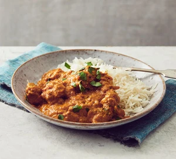

Chicken Curry

Ingredients
- 2tbsp sunflower oil
- 1 onion, thinly sliced
- 2 garlic cloves, crushed
- thumb-sized piece of ginger, grated
- 6 chicken thighs, boneless and skinless
- 3tbsp medium spice paste(tikka works well)
- 400g can chopped tomatoes
- 100g Greek yogurt
- 1 small bunch of coriander, leaves chopped
- 50g ground almonds
- naan breads or cooked basmati rice, to serve
Method
- Heat the oil in a flameproof casserole dish or large frying pan over a medium heat. Add the onion and a generous pinch of salt and fry for 8 to 10 mins, or until the onion has turned golden brown and sticky. Add the garlic and ginger, cooking for a futher minute.
- Chop the chicken into chunky 3cm pieves, add to the pan and fry for 5 mins before stirring though the spice paste and tomatoes, along with 250ml water. Bring to boil, lower to a simmer and cook on a gentle heat uncovered for 25-35 mins or until rich and slightly reduced. Stir though the yogurt, coriander and ground almonds, season and serve with warm naan or fluffy basmati rice.